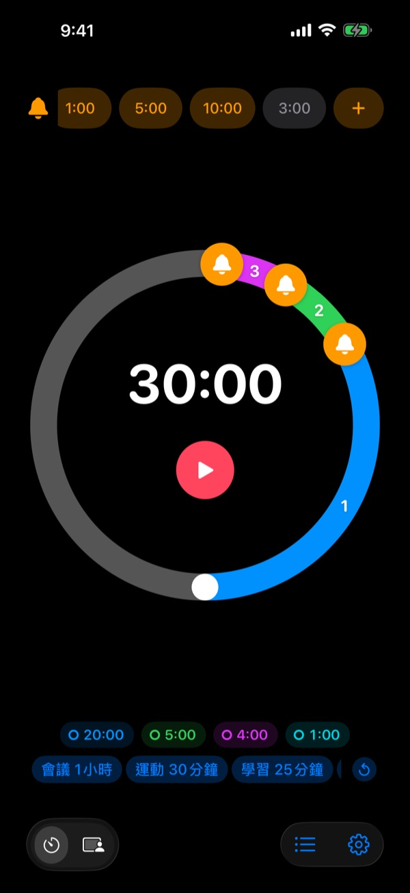
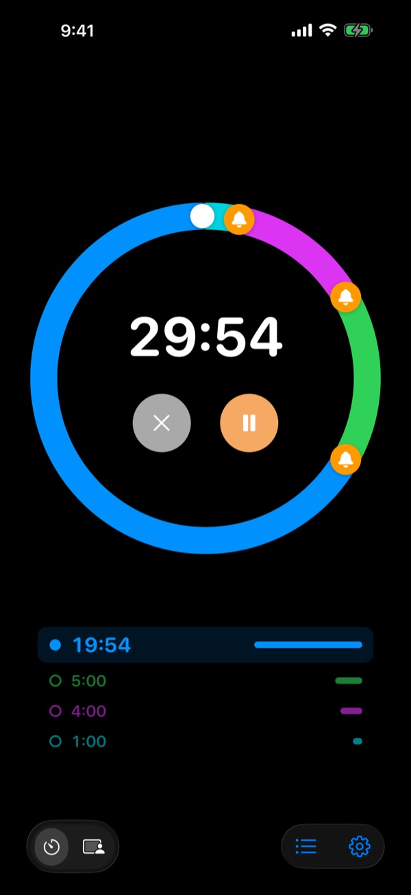
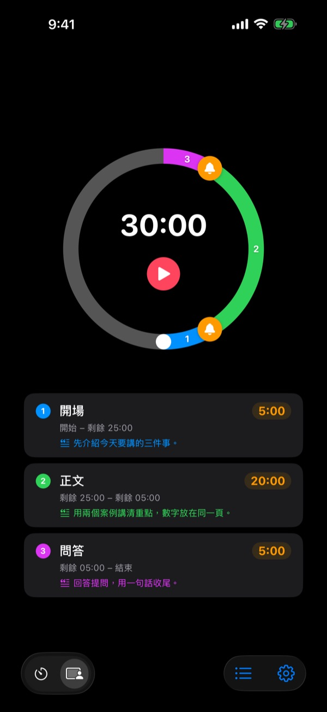
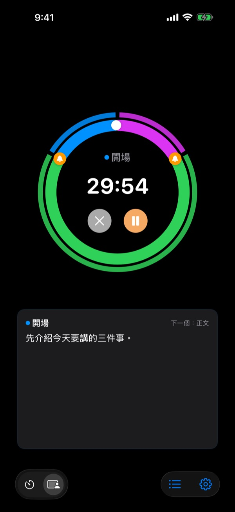

不是結束了才響，
而是結束之前
簡報結束前5分鐘，會議收尾前3分鐘。在你選好的每個時間點提前提醒，不必一直偷看時鐘，專心做眼前的事。
提前提醒不限數量，完全免費。支援 iPhone、Apple Watch 和 Mac。

在這裡試試看
選好長度和提醒，再按下紅色按鈕。1分鐘只走1秒，輪到提醒時會響一聲告訴你。
計時器響的時候，是不是已經來不及了？
一般計時器要到0才響。簡報還沒講到結論就到時間了，課還沒總結就打鐘了，會議什麼都沒決定就被下一個行程擠掉。你需要的不是「時間到了」，而是還來得及收尾時的那一聲提醒。
結束之前，想提醒幾次都可以
把錶盤上的鈴鐺拖到結束前10分鐘、5分鐘、1分鐘，或任何你想要的位置。不限數量，每個提醒都能寫上自己的話，例如「開始收尾投影片」。
即使螢幕關著，鎖定畫面和動態島上也看得到剩餘時間，Apple Watch 會在手腕上輕輕震動。

把簡報分成幾段
開場5分鐘、主題20分鐘、問答5分鐘，替每一段取名並寫下講稿。每次換段時都會用那一段的名字提醒你，時間分配自然就守住了。（Pro）

現在要說的話，就在螢幕上
進行中會用大字顯示目前這一段的講稿和下一段。超過時間也不會停在0，而是繼續計算你超出了多少。（Pro）

三個步驟就能開始
- 1
設定時間
轉動錶盤，或點一下時間直接輸入。一圈是60分鐘，兩圈是120分鐘。
- 2
放好提醒
點上方的1:00、5:00等標籤，或把鈴鐺拖到錶盤上。
- 3
開始，然後放心
鎖定螢幕也沒關係，到了設定的時間，iPhone 和 Apple Watch 都會提醒你。
大家常用的設定
- 20分鐘簡報
- 前5分鐘「進入結論」，前1分鐘「致謝收尾」
- 50分鐘的課
- 前10分鐘「說明作業」，前3分鐘「總結」
- 30分鐘會議
- 前5分鐘「確認決議」
- 皮拉提斯、瑜伽課
- 依動作分段的分段模式（Pro）
- 25分鐘讀書
- 前5分鐘，結束後休息
- 組間休息3分鐘
- 前30秒「準備下一組」
- 1小時輔導或諮詢
- 前15分鐘、前5分鐘
常用的設定存成範本，點一下就能叫出來（記憶以上）。也可以用捷徑和 Siri 開始或停止計時。
提前提醒免費，需要它記住設定再付費
免費
- 提前提醒不限數量
- 每個提醒都能寫自己的提示文字
- 鎖定畫面和動態島上的即時動態
- 直到我確認為止持續提醒，結束時用鬧鐘響鈴
- Apple Watch App 和 Mac 選單列
- 所有主題顏色
記憶 · Pro
- 記憶：把設定存為範本，點一下就開始
- 記憶：重新打開 App 時回到上次的設定
- Pro：記憶的全部功能，加上分段模式（分段名稱和講稿）
- Pro：超時計時、紀錄和統計
記憶和 Pro 都可以選擇按年訂閱或一次買斷永久使用。分段模式、超時計時和紀錄在付費前可以先試用幾次。
沒有廣告。一張永久通行證即可解鎖 Leeo 做的所有 App。
常見問題
提醒沒有響。
大多是通知權限或專注模式的問題。請在 App 的設定 › 通知方式查看通知權限。如果在用專注模式，請到 iOS 設定 › 專注模式把 Rereminder 加為允許的 App。靜音模式下只會震動。如果 Rereminder 在設定 › 通知 › 排程摘要裡，提醒會被集中起來晚一點才到，請把它移出來。
靜音模式下也能知道時間到了嗎？
可以。在設定裡打開「結束時用鬧鐘響鈴」，即使在靜音模式或專注模式下也會大聲響起。打開「直到我確認為止持續提醒」，會一直提醒到你在通知上按下停止或稍後提醒。
Apple Watch 沒有同步。
打開 App 的設定 › 我的裝置，會顯示少了哪一步。請確認手錶已和這支 iPhone 配對、手錶上已安裝 Rereminder，並且安裝後在手錶上打開過一次。之後即使手錶 App 沒開，計時狀態也會同步過去。
Mac 顯示「未連線」。
「已連線」的意思是最近10分鐘內那台 Mac 上開過這個 App，所以剛喚醒的 Mac 要過幾分鐘才會出現。兩台裝置需要登入同一個 iCloud 帳號，並打開 iCloud 雲碟。Mac 需要 macOS 26 或以上版本。
付了錢卻沒有解鎖。
請在方案畫面點一下「回復購買」，並確認登入的是付款時用的同一個 Apple 帳號。買斷的項目即使刪除重裝 App 或換了裝置，也會回來。
儲存的範本被鎖住了。
範本沒有不見。沒有記憶或 Pro 時它們會鎖著留在那裡，一購買就會馬上重新打開。
我想退款。
退款由 Apple 處理。請用付款的 Apple 帳號到 reportaproblem.apple.com 申請。如果是因為故障，也請告訴我，我會修好，免得下一個人再遇到。
不安裝可以先試用嗎？
在 iPhone 上打開 m1zz.github.io/rereminder，會以 App Clip 直接執行計時器。錶盤和提醒都在，範本、分段模式和手錶 App 在正式版裡。
支援哪些裝置？
iPhone 需要 iOS 26 或以上，Apple Watch 需要 watchOS 11.6 或以上，Mac 需要 macOS 26 或以上。目前還不支援 iPad。App 提供24種語言。
我的資料存在哪裡？
計時器、範本、分段名稱、講稿和紀錄都只存在裝置裡，刪除 App 就會一起刪除。App 只會傳送用來改進的匿名使用統計，詳細內容寫在隱私權政策裡。
有問題或建議，請寄信到 leeo@kakao.com。通常2到3天內回覆。